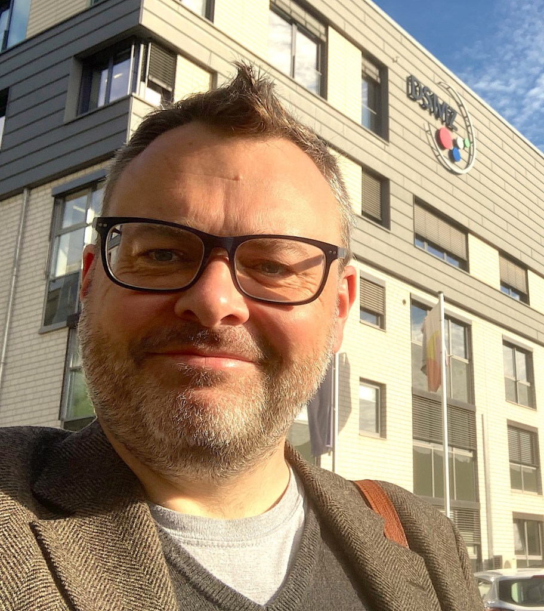

Forum Chair
Ping (Penny) Han
School of Energy and Environment
State Key Laboratory of Marine Environmental Health
City University of Hong Kong
International Conference on Nitrification and Related Processes · Asia Forum
From Nitrification Science
to Asia-Pacific Collaboration
4–6 December 2026City University of Hong KongAround 50 participants
Hosted at CityUHK
Forum Chair
School of Energy and Environment
State Key Laboratory of Marine Environmental Health
City University of Hong Kong
Co-chair
School of Energy and Environment
State Key Laboratory of Marine Environmental Health
City University of Hong Kong
About the forum
Bringing together researchers in nitrification and related nitrogen-cycle processes to share advances and develop international collaborations.
Through keynote lectures, invited talks and plenary discussions, the forum connects microbial ecophysiology, biogeochemical processes and environmental applications. We aim to strengthen the Asia-Pacific research community and develop collaborations on topics including N₂O mitigation strategies.
Meet the advisory boards and organizersScientific themes
Physiology, evolution, adaptation and cultivation of nitrifiers and related microorganisms.
Nitrogen cycling across natural and engineered systems, from organisms and communities to soils, waters and sediments.
N₂O mitigation, anammox, wastewater treatment, resource recovery and translation from mechanism to practice.
Keynote speakers
University of Alberta
Canada
CNRS / Université Claude Bernard Lyon 1
FranceCity University of Hong Kong
Hong Kong SAR, ChinaThe University of Queensland
AustraliaKAIST
Republic of KoreaNanyang Technological University
SingaporeProgramme at a glance
Friday · 4 December
Arrival, registration and informal networking.
Saturday · 5 December
Keynotes and invited talks, afternoon plenary discussions, a new nitrification textbook discussion and forum dinner.
Scientific programme · 09:00–17:00
Sunday · 6 December
Keynotes and invited talks, a final plenary action plan and closing.
Scientific programme · 09:00–12:30
All sessions take place in one room. Programme and speaker allocation are subject to final confirmation.
4–6 December 2026 · CityUHK